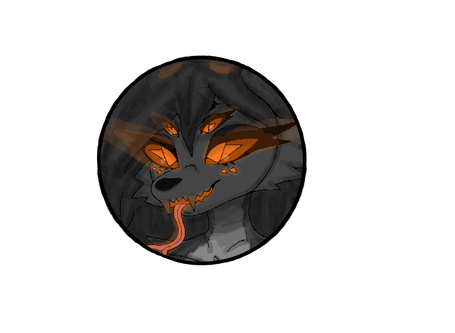

SheWorld History -
Content -
- Formation of the SystemShe.
- Birth of SheWorld.
- Birth of Life.
- First Biological Categories.
- Explosion of Complexity.
- The Gas Giant Merger.
- Rise of Life.
Formation of The SystemShe -
The SystemShe formed similarly to many other star systems, but with a rare configuration that allowed it to develop more planets than usual, though not as many as in human system.
Birth of SheWorld -
SheWorld formed from countless colliding cosmic bodies. Even after the planet itself took shape the collision period continued. A moon never formed because: the planet pulled its own mass back and debris fell back onto the surface, low-velocity impacts prevented a stable satellite. Instead this process created the first rings of the planet: ancient, dense, and extremely valuable. After the later gas giant merger these early ring materials also absorbed traces of the collision.
During this stage SheWorld began rotating around its own axis.
Birth of Life -
SheWorld was unstable not orbitally, but internally. Its chemistry was extremely rich and chaotic. Life began in this chemical slurry as semi-chemical, semi-mineral compounds.
For early life the planet was an ideal cradle: extremely rich chemistry, powerful geology, strong magnetic field, young but chemically aggressive atmosphere, rings delivering cosmic material, rotation providing day/night cycles, location in the Green Zone with normal temperatures.
Life emerged in the planetary slurry then spread across the surface into the atmosphere and deep underground.
First Biological Categories -
The planet cooled and stabilized into a chemically-mineral rich world with a stable day/night cycle. The atmosphere already partially blocked starlight. Life evolved from semi-mineral to fully chemical organisms.
Early microorganisms split into clear categories: mineral-eaters, chemical feeders, predatory forms, viral and parasitic forms, symbiotic forms, dependent forms (like herbivores/plants analogs).
Reproduction types also diversified: division / budding, asexual reproduction, sexual reproduction, pseudo-male / pseudo-female dependent systems, self-assembly reproduction (virus-like).
Life spread everywhere in surface, atmosphere, underground.
Explosion of Complexity -
The chemical soup became a porridge, too much diversity, too much interaction.
Complex life emerged and split into categories: predators, dependent species, parasitic species, synthetic / energetic species, mineral / deep species, symbiotic species, planet-altering species (those capable of changing atmosphere and geology), underwater (slurry) plants and fungi appeared.
The Gas Giant Merger -
While life was evolving peacefully the two gas giants collided forming the super gas giant She-4-G.
This event critically affected SheWorld: waves of debris impacts, massive chemical enrichment, ring system expansion, atmosphere thickened into a dense aggressive structure, radiation spiked then later decreased.
Long-term effects -
Orbit became elliptical between the star and the super giant, extreme seasons formed, external instability added to internal instability, life adapted to survive extreme cold by entering anabiosis, slurry oceans froze heavily during winter.
Life began emerging onto the surface in many forms. Biolumen evolved due to constant darkness and half-darkness. Nervous systems appeared. Most life developed dark, white, or blood-colored bodies with biolumen.
This was the moment SheWorld became the world it is now.
Rise of Life -
Life continued evolving aggressively. The ancestors of the SheFur appeared during this long stage.
SheFur developed: individual-hive intelligence, extreme adaptability, genetic constructor their defining evolutionary weapon. Other species had primitive versions of these mechanisms, but only SheFur evolved it into a true adaptive absolute, while others merely had accelerated evolution.